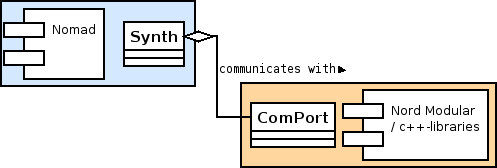

Todo
While designing the system that communicates with the Nord Module there were several points important for us. The communication system
To make it easy to communicate with the Nord Modular from within Nomad we introduced the Synth class and the ComPort interface.
ComPort is the interface to the low level libraries that communicates with the Nord Modular directly.
The Synth layer hides the ComPort interface and provides additional functionality like connect()/ disconnect() methods or automatically installing the timer for frequently sending hearbeat() messages to the synth.
Although both classes could have been made into one class this way makes it easier to switch to another ComPort interface because only the internal layer can be replaced and Nomad has not to take care of this.

figure:comport/synth model
Because at the beginning of development we had no ComPort implementation and to help in debugging there is the NullComPort class that implements the ComPort interface. The NullComPort can not connect to the synth, but it can act is if it would be able to have a connection. Actions and messages are printed to the standard output device which should help development.
There are several reasons to make it possible to switch the ComPort interface implementation. Even at runtime.
2005-11-14 (Christian) - Initial Document